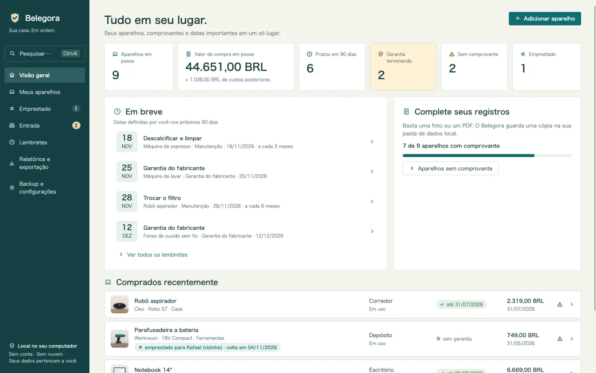
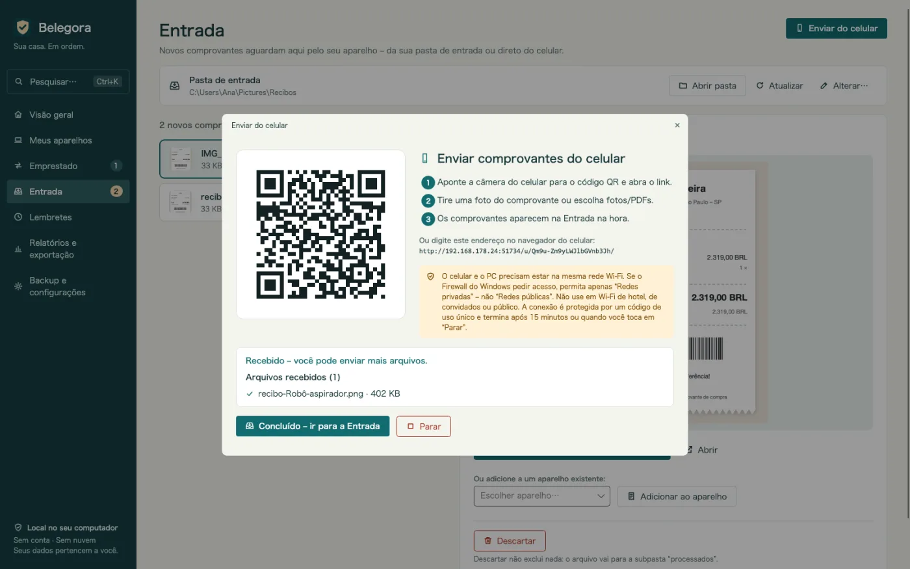
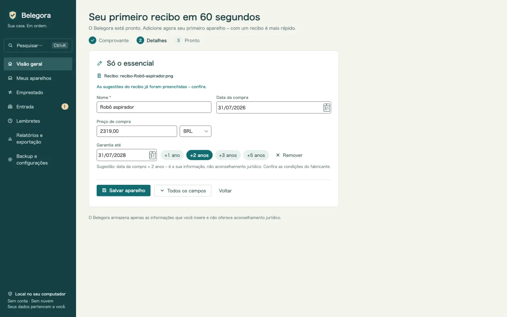
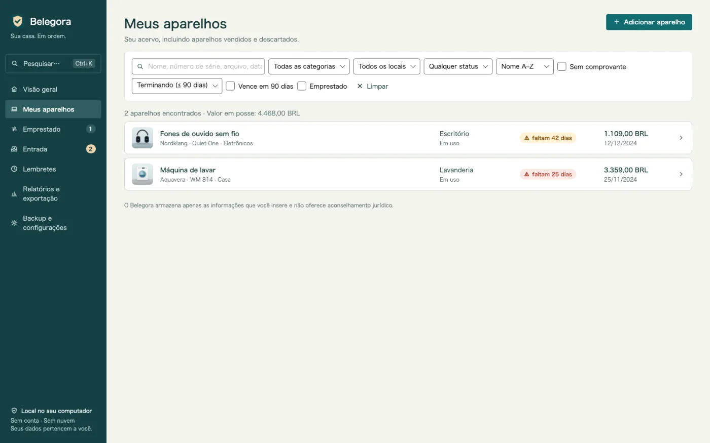
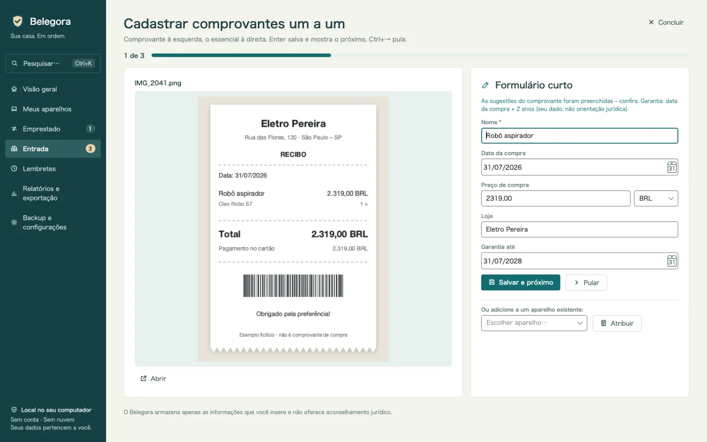
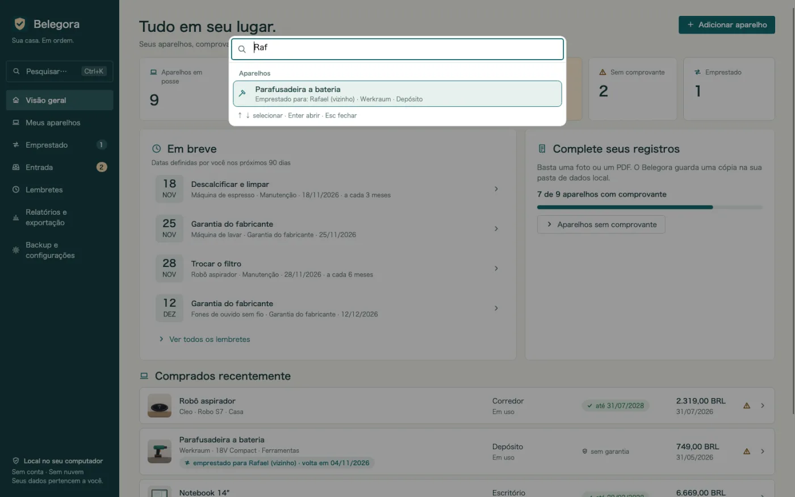
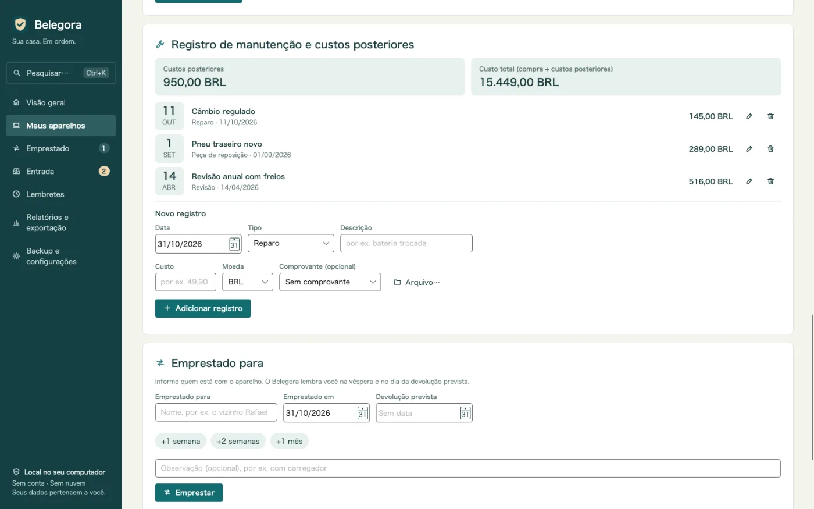
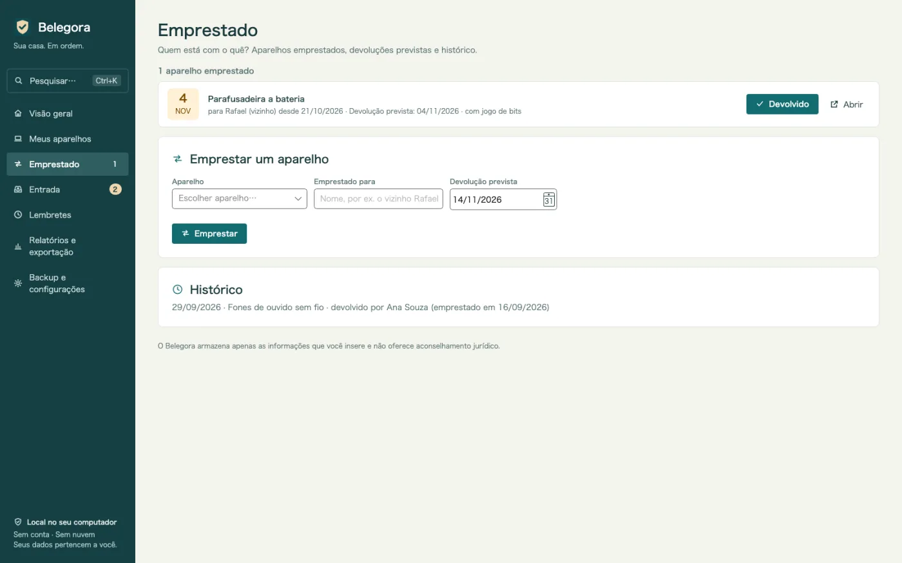
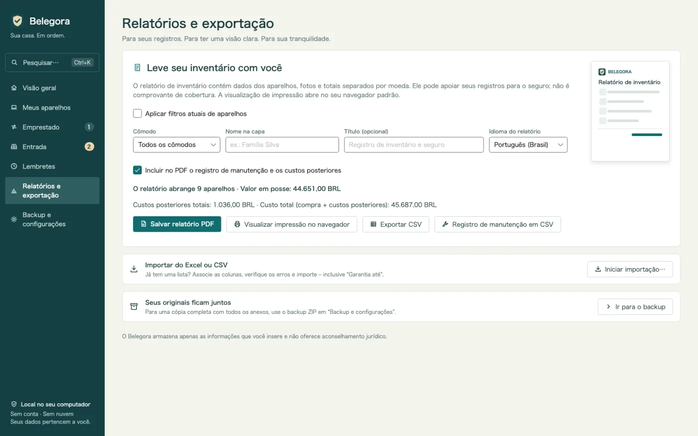
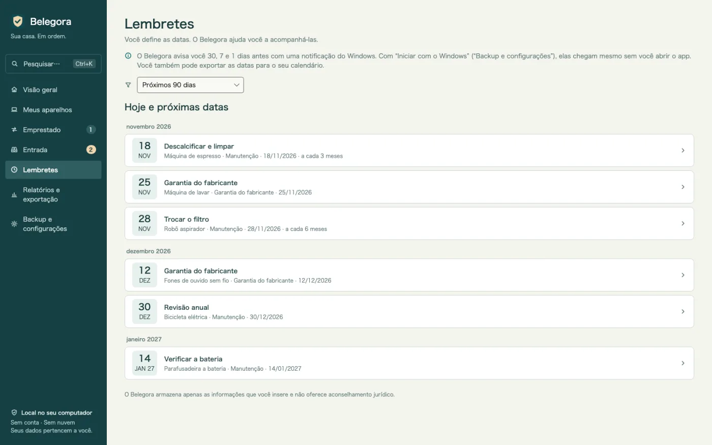

Lembretes antes dos prazos
Garantia, devolução, seguro, manutenção: o Belegora mostra uma notificação do Windows com a antecedência que você escolher.
Arquivo de garantias e notas fiscais para Windows
A bateria pifou depois de 20 meses? Nota fiscal, número de série e data da garantia em segundos. Notas do celular por QR code, lembretes antes dos seus prazos e PDF para o seguro. Offline, sem conta.

O Belegora cuida da parte chata: junta as notas, sugere os dados e avisa antes dos seus prazos.
Garantia, devolução, seguro, manutenção: o Belegora mostra uma notificação do Windows com a antecedência que você escolher.
Escaneie o QR code e envie a foto pelo navegador. A nota chega pelo seu Wi-Fi na caixa de entrada. Sem cabo, nuvem ou app.
Data da compra, valor e loja são sugeridos a partir da nota. Você confere, salva e o aparelho é criado com um clique.
A lista de aparelhos mostra num relance onde a garantia vence logo, com a coluna “Garantia até”.
Encontre qualquer aparelho por nome, número de série, loja, marcador, arquivo ou por quem pegou emprestado, e ações como PDF ou backup – pelo teclado.
Várias notas em sequência: a nota à esquerda, o formulário curto com sugestões à direita. Enter salva, Ctrl+→ pula.
Anote reparos, revisões, peças e acessórios com o custo. Custos posteriores e custo total por aparelho, também no PDF e em CSV.
Quem está com a furadeira? Emprestado para, desde quando, devolução prevista – com lembrete e histórico. E um resumo uma vez por semana.
Depois de um alagamento ou roubo: relatório com capa, lista por cômodo, totais, fotos e notas. Idioma do relatório à sua escolha.
Traga sua planilha com mapeamento de colunas. Exporte em CSV e os prazos em ICS para qualquer agenda.
Backups com anexos são automáticos. A restauração mostra uma prévia.
Sem nuvem, conta, anúncios ou rastreamento. Seus dados ficam no seu PC.
Bom saber: o Belegora guarda seus dados e prazos e não oferece orientação jurídica. As notificações aparecem enquanto o Belegora está aberto; o app pode iniciar com o Windows. O reconhecimento de texto usa o OCR do Windows e exige o pacote de idioma do Windows correspondente.
Envie uma foto do celular por QR code, coloque um arquivo na pasta de entrada ou importe sua planilha.
O Belegora sugere data, valor e loja. Crie o aparelho, defina o prazo e a antecedência.
O Belegora avisa a tempo. Se algo acontecer, o relatório para o seguro sai em minutos.









14,99 €
pagamento único, preço previsto na Alemanha
Em preparação para a Microsoft Store. Os preços podem variar conforme o país.
Só você. O Belegora não envia dados para nós nem para terceiros; sem conta e sem telemetria. O envio do celular funciona só na sua rede local.
No seu PC, na pasta de dados do app (%LOCALAPPDATA%\MinhStudios\Belegora), com cópias dos anexos e os backups automáticos.
Crie um backup no Belegora (ZIP com todos os dados e anexos), copie para o PC novo, instale o Belegora e restaure. A prévia mostra o que será restaurado.
Não. O Belegora guarda seus dados e prazos e não oferece orientação jurídica. O direito é confirmado pela loja, fabricante ou seguradora.
As notificações aparecem enquanto o Belegora está aberto; o app pode iniciar com o Windows. Você também pode exportar os prazos em ICS para a agenda.